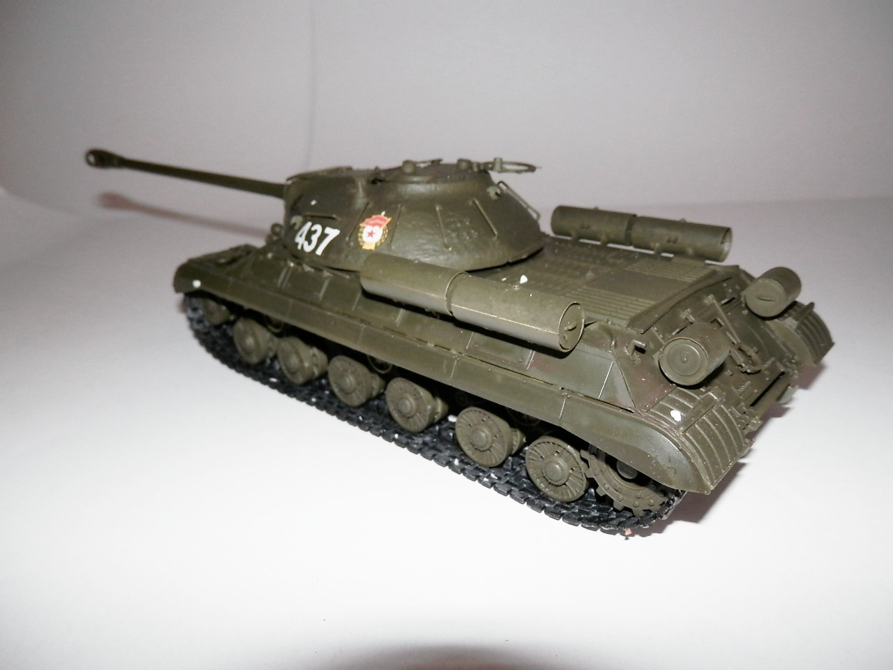
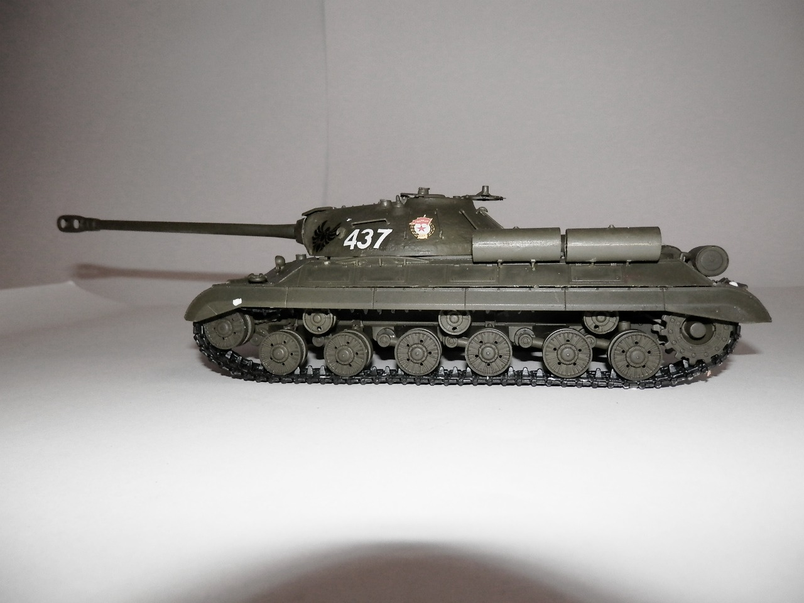
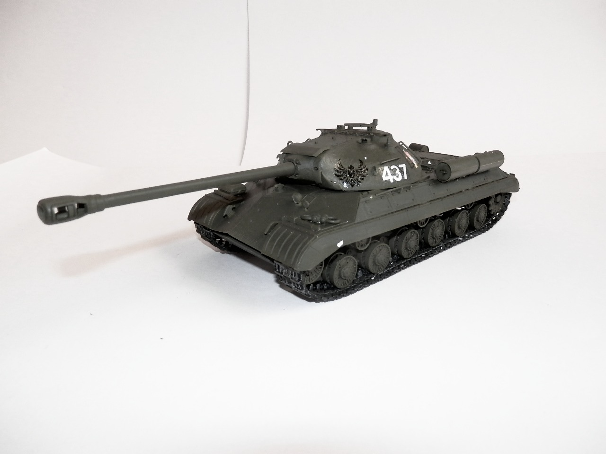

Mezzi militari · scale model archive
JS3 Soviet Tank
JS3 Soviet Tank — Kit: Zvezda, Scale: 1/35. Heavy tank which appeared at the very end of WW2, too late to fight in battle

Photo gallery


English description
Heavy tank which appeared at the very end of WW2, too late to fight in battle
Descrizione italiana
Carro pesante apparso proprio alla fine della Seconda guerra mondiale, troppo tardi per partecipare ai combattimenti.